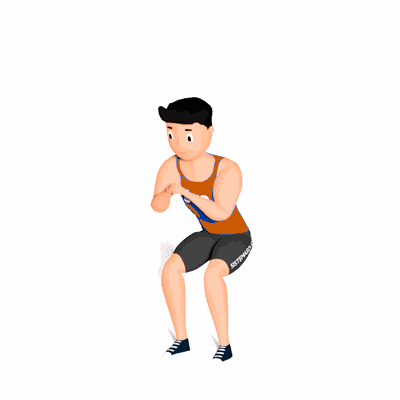

Agachamento 21

O exercício trabalha com intensidade o fortalecimento dos músculos do glúteo, quadríceps e isquiotibiais.
Ficha Técnica
Tipo: Musculação
Grupo Muscular: Perna
Aparelho: Nenhum
Músculos: Nenhum
Como realizar
- Na primeira parte, desça flexionando os joelhos até as coxas ficarem paralelas ao chão;
- Agora realize um agachamento curto dessa posição para baixo e então repita o movimento por 7 vezes;
- Na segunda parte, mantenha-se com as coxas paralelas ao chão e realize agachamento dessa posição para cima e repita por 7 vezes o movimento;
- Na terceira parte, você ainda precisa realizar mais 7 repetições de amplitude completa, atingindo o total de 2
- 1 repetições.
 RC STORE
RC STORE